Neural surrogates for optics
Simulating how light moves through AR glasses optics is slow. I trained neural networks on those simulations, so they predict the answer far faster than re-running them.
Try the models ↗I'm an applied physicist and hardware engineer. I build systems where mechanics, electronics and optics have to work as one, and take them from physics to production.
My work spans physics and first principles, MEMS, displays and system-level hardware, from experiments and simulation to silicon fabrication and production. I brought that breadth to AR glasses at Magic Leap, Snap and Meta, including a first-of-its-kind dimmer I invented and shipped. This year I went deep on AI and hardware at Andrew Ng's AI Fund.
Each step combined physics with mechanical, electrical and optical engineering, and took it from a lab bench into something real: a device, a factory process, a product in people's hands. Now I'm bringing the same systems thinking to AI.
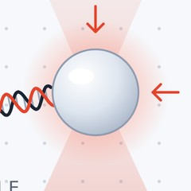
2004Held a single bead with a laser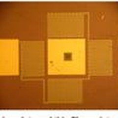
2010Moved mirrors with light alone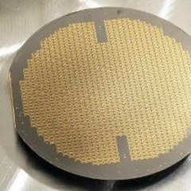
2010–16Built silicon machines that sweep a laser 200,000 times a second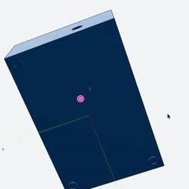
2026Built an AI tool that designs parts from speech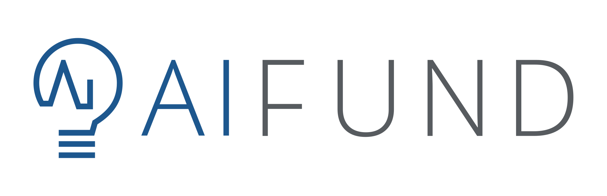
What I believeAs AI keeps compounding, the ability to build, sense and manufacture in the physical world becomes more valuable, not less.
I built an AI tool that designs 3D parts from plain speech. I built it from scratch, and tested it with more than 60 real customers.
Where it landed: AI that generates CAD is quickly becoming a commodity, so I chose not to build this company. The lessons on customers, voice and speed come with me.
A voice agent built with Vocal Bridge. You point at a face of the model and describe an edit; the agent turns it into a parametric CAD operation and shows the next revision. Vocal Bridge's description: "Point at a surface, describe an edit, and inspect the next revision."
"Turbo" mode ran GPT-OSS on Cerebras hardware (early access via AI Fund): about 3 seconds from speaking to an updated model. Cerebras ↗
For two enterprise MVPs: search large CAD libraries by shape, using eight rendered views of each part plus geometry measurements.
Selected after an intensive build challenge for a residency at Andrew Ng's venture studio. AI Fund ↗
Simulating how light moves through AR glasses optics is slow. I trained neural networks on those simulations, so they predict the answer far faster than re-running them.
Try the models ↗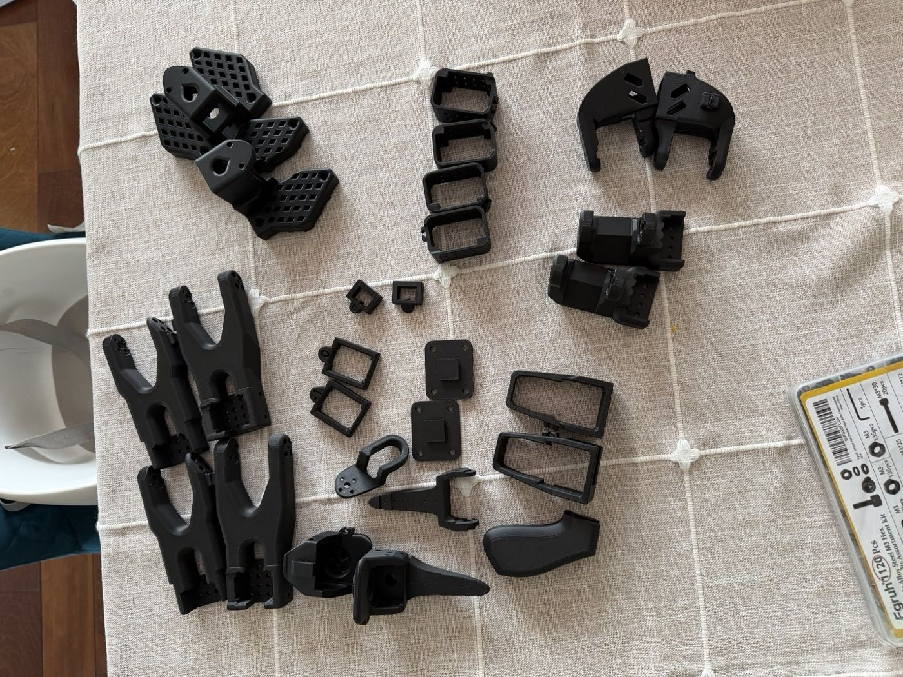
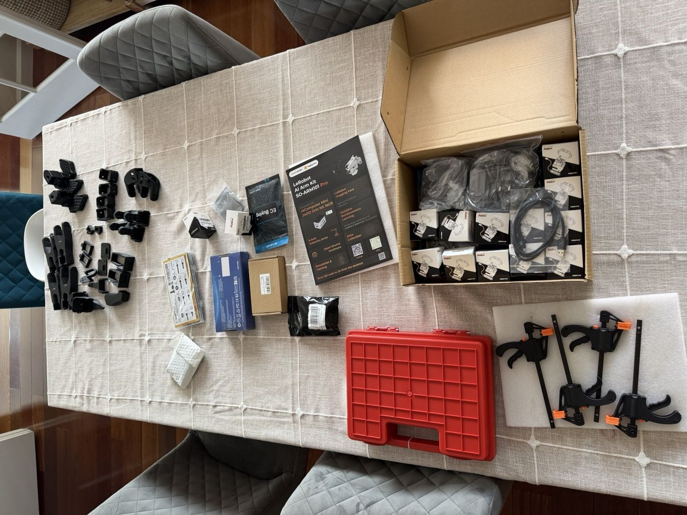
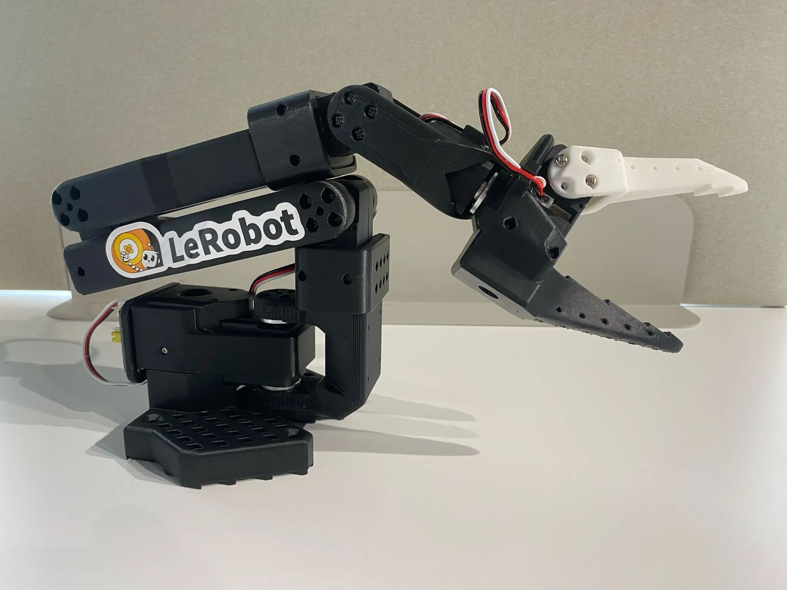
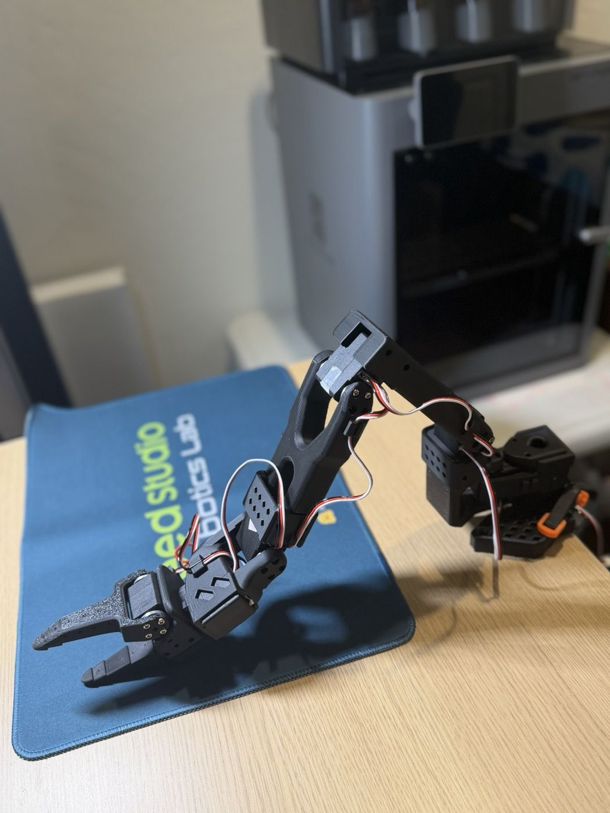
Machines that report how they're doing, built on my mechanical and electrical background. I'm building open-source robot arms to learn how machines sense and act, then sensors that stream a machine's vibration and heat to a dashboard.
Training data comes from physics simulations of diffraction gratings in AR waveguides: inputs are the grating geometry and wavelength, outputs are where each color goes. I compared five architectures on the same data: MLP, ResNet, 1D CNN, LSTM and 1D U-Net.
Step one is hands-on robotics with open-source LeRobot arms: assembling, calibrating and programming them. Step two is remote machine sensing: vibration and temperature sensors on equipment, streamed to a live dashboard.
AR glasses draw images on top of the real world, and sunlight washes them out. My contribution: I invented the see-through dimmer that darkens the world behind the image, and led it from research to a shipped product.
Global dimming darkens the whole lens evenly, like sunglasses that switch on. Spatial dimming darkens only the region behind virtual content, so the rest of the world stays bright and natural.
The dimmer's optics, drive electronics and mechanical fit in the headset all had to work together with the display and the software that decides where to dim.
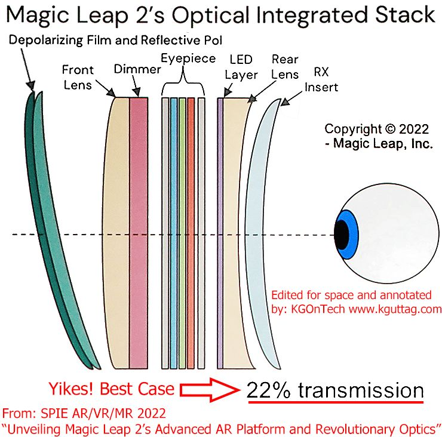
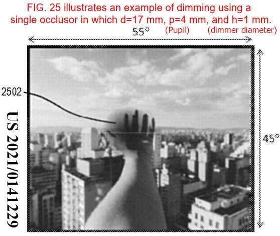
Demo images are illustrative, not device measurements: an AI-generated courtyard, a fictional movie still, and a sketch of the glasses from the outside.
Three companies, one focus: the hardware where optics, electronics and mechanics meet.
Invented the Magic Leap 2 dimmer and took it from research to a shipped product. Early work on MEMS and microLED projectors.
The early vision · WIRED ↗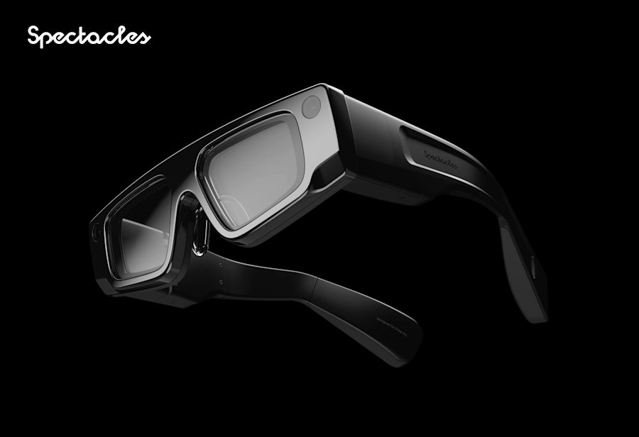
Illustration: lenses dimmingLed the team that built Spectacles' global dimmers from scratch: lenses that darken outdoors so AR stays readable.
Spectacles ↗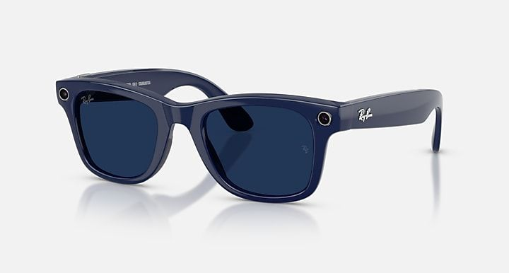
Eye tracking and lens system architecture, including prescription lenses, for Meta's smart glasses.
Ray-Ban Meta ↗A MEMS mirror is a machine carved from silicon: a membrane on microscopic springs, moved by electrical forces and resonating 200,000 times a second. Inside medical scanners called OCT, it tunes a laser's color so doctors can see beneath the surface of tissue.
I owned it across every domain: the mechanics of the springs and resonance, the electrical drive, the optics, and fabrication on silicon wafers through testing and production.
A MEMS tunable Fabry-Perot filter: a tethered membrane mirror moves to change the gap of an optical cavity, which selects the laser wavelength. Sweeping it fast gives the swept-source laser used in optical coherence tomography (OCT).
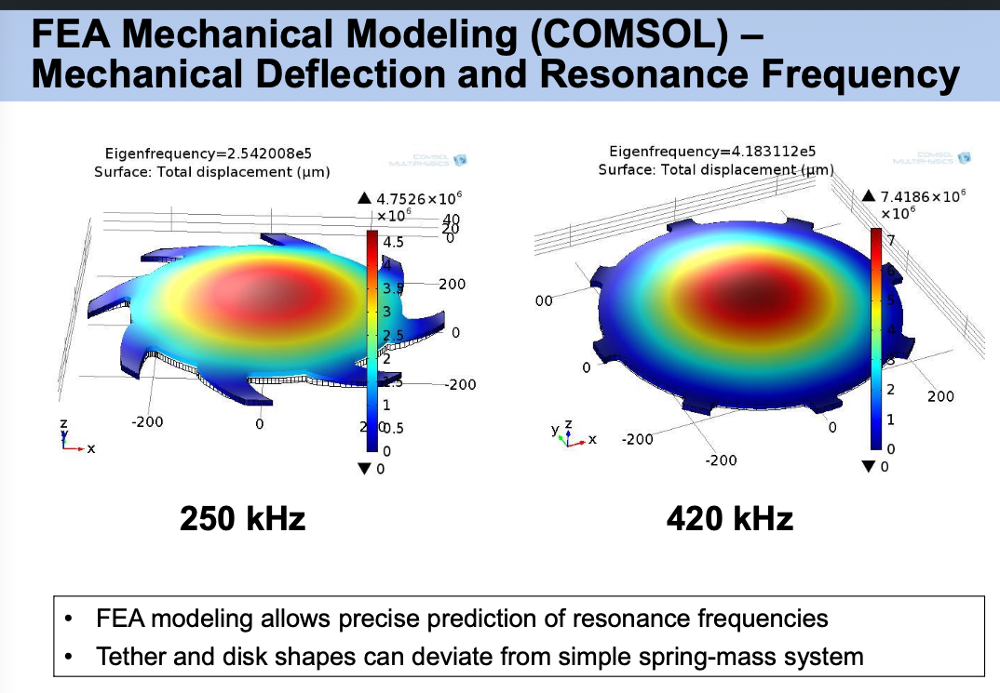
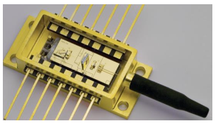
Axsun Technologies is now part of Excelitas. Excelitas ↗ · Photonics West 2015 paper ↗ · SPIE talk, 2014
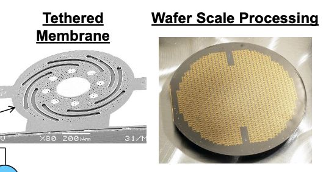
An array of 900 tiny mirrors that move when light shines on them. Each pixel combines a photodiode, a thin-film resistor and a mirror plate on springs, so light in becomes motion out: optics, electronics and mechanics in one chip. I designed, fabricated and measured them.
500 nm of motion from just 5 mW of light
Applied Physics Letters · first author ↗Optical tweezers: a focused laser holds a bead a hundredth the width of a hair, like a mass on a spring. I built the setup and measured how stiff that spring is.
Trap frequency measured to 0.1%, better than previous methods
Physical Review Letters · 2005 ↗A 900-pixel integrated deformable mirror actuated by light rather than electrodes, aimed at adaptive optics. I designed, modeled, fabricated and characterized the devices: 500 nm of deflection from 5 mW of optical power.
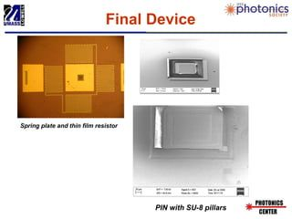
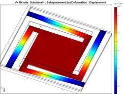
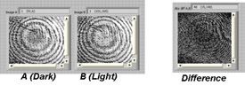
Applied Physics Letters paper ↗ · Design and modeling paper ↗ · Research presentation ↗
A tightly focused laser traps a micron-sized bead in water. The trap acts like a spring, and its stiffness (spring constant) sets the bead's oscillation frequency. We modulated the trap's stiffness to drive parametric resonance. Because the bead is heavily damped, resonance shows up not as bigger swings but as larger Brownian fluctuations. This measured the trap frequency to 0.1%, better than previous techniques.
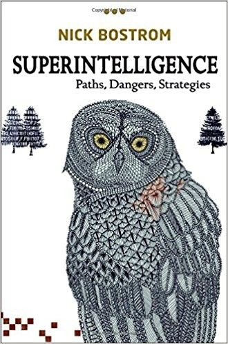
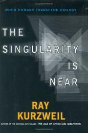
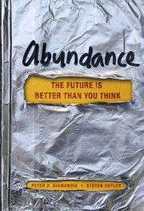
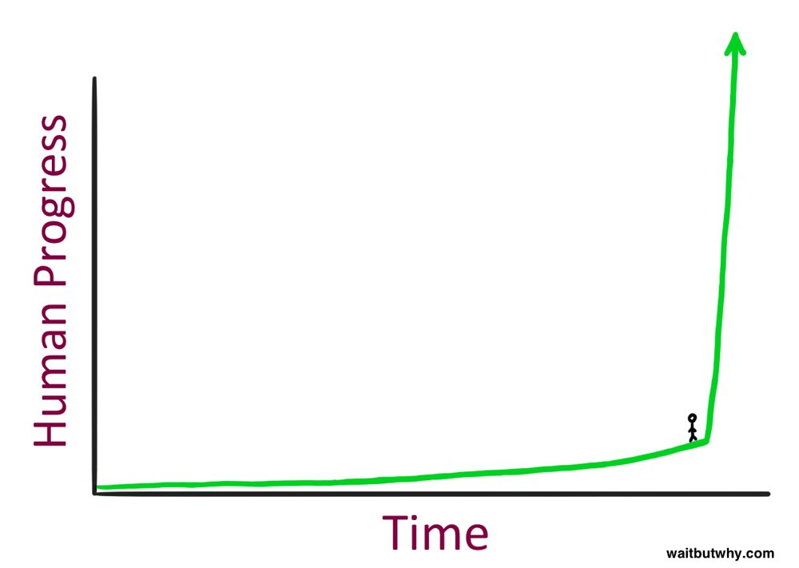
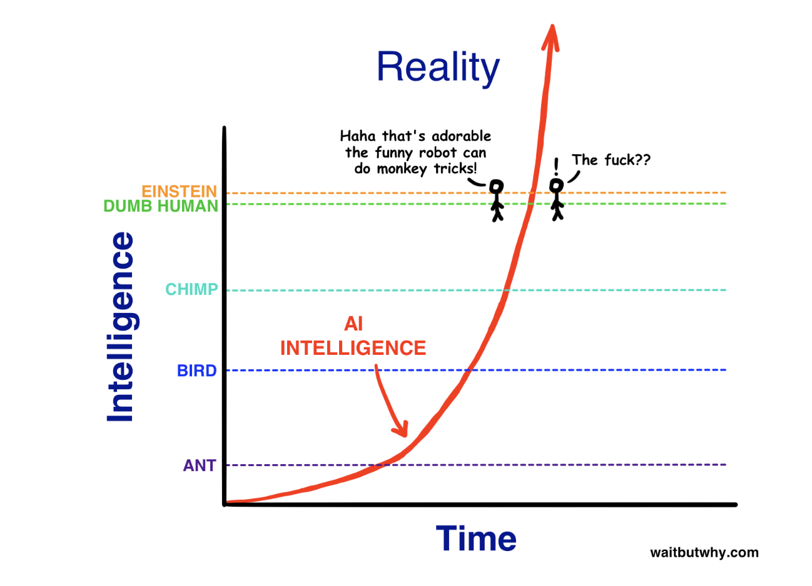
Since 2015: Wait But Why, Bostrom's Superintelligence, Kurzweil and Diamandis. My takeaway: as AI compounds, building in the physical world matters more.
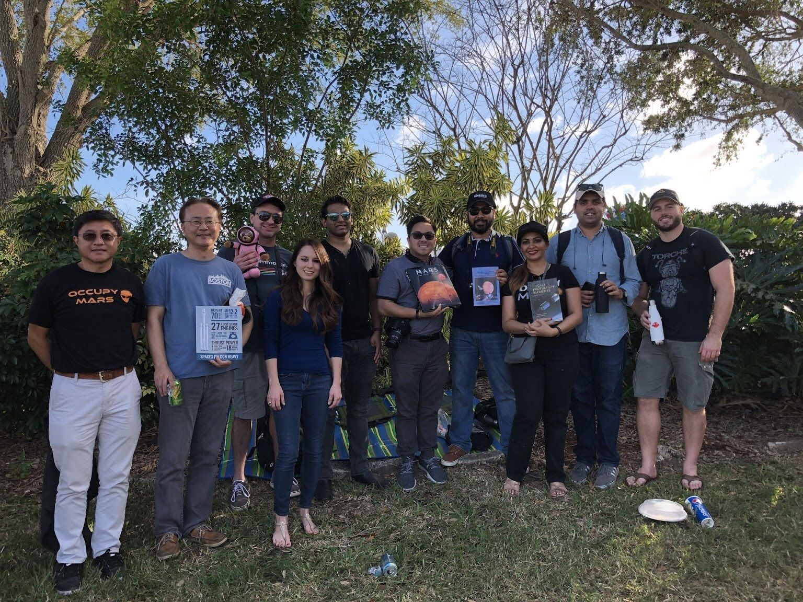
While at Magic Leap in Florida I watched many launches, including the first Falcon Heavy in 2018, with both boosters landing together.
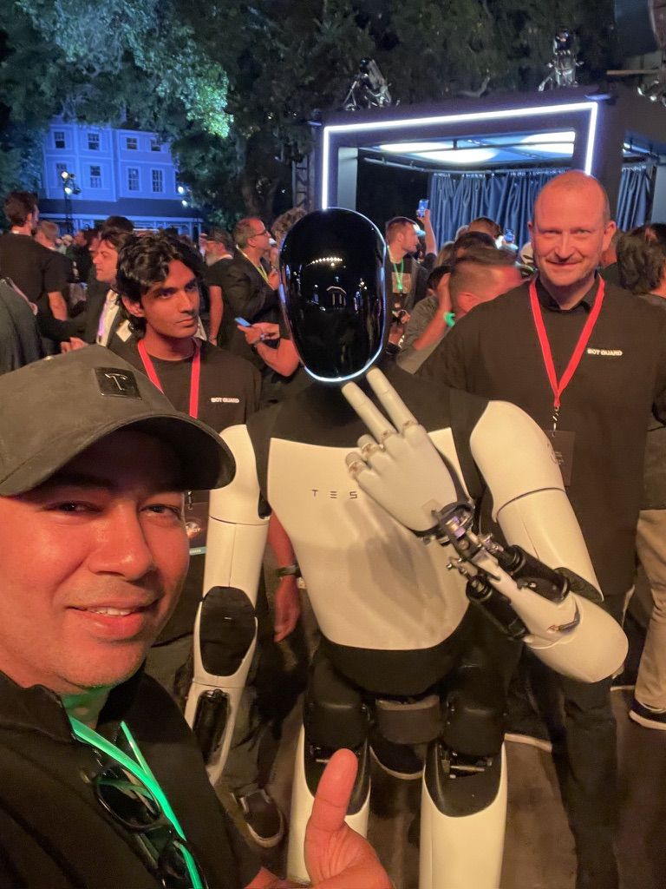
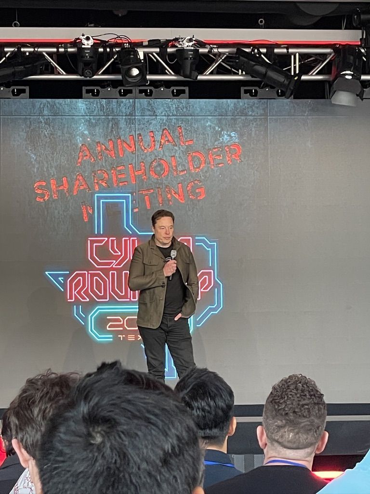
I've followed Tesla's self-driving deeply for years, especially its camera-only, neural-network approach, and I test each new version myself. In 2024 I was invited to Giga Texas, where hearing Elon speak was inspiring, and at the We, Robot event I watched Optimus and the Cybercab launch right in front of me, and rode in one.
I'd like to hear from people at AI labs, and from anyone starting a company in AI and hardware.